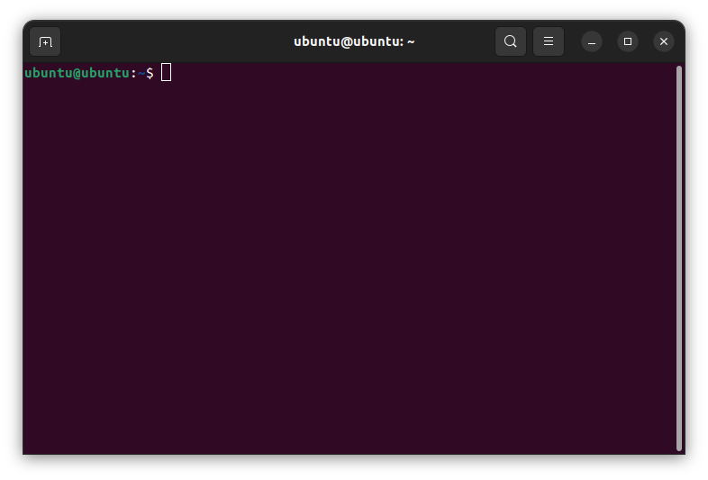

Emplearás apt que es el gestor de paquetes de tu distribución Debian/Ubuntu y derivadas. Es recomendable que tengas experiencia de trabajo en sistemas Linux basados en Debian, como puede ser Ubuntu o Linux Mint, para poder seguir esta guía de instalación de Python.
Es especialmente importante que tengas conocimientos básicos sobre la terminal del sistema y sepas cómo emplearla.
Prerequisitos
Para completar los pasos de esta guía de instalación de Python en Linux, necesitas una computadora con alguna distribución basada en Debian como Ubuntu o Linux Mint. Además, necesitas tener privilegios root y una conexión a Internet.
¡Lo demás es solo seguir las instrucciones más abajo!
Instalar Python en Debian o Ubuntu Linux con apt
La manera recomendada para instalar Python en una computadora con Linux es emplear el gestor de paquetes de tu distribución. En distribuciones basadas en Debian y Ubuntu, el gestor de paquetes es apt. Los pasos para completar la instalación son los siguientes:
- Actualizar la lista de paquetes disponibles con
sudo apt update. - Instalar Python desde los repositorios del sistema con
sudo apt install python3. - Verificar que la instalación se completó con éxito.
- 🐍
A continuación encontrarás una explicación detallada de estos pasos. Presta especial atención al paso número dos. De él dependerá el éxito de la instalación.
Paso 1: Actualizar la lista de paquetes disponibles
Lo primero es abrir una terminal del sistema o línea de comandos. Para esto, puedes presionar Ctrl+Alt+T en tu teclado o buscar el terminal entre las aplicaciones de tu sistema. En Ubuntu, el terminal luce de la siguiente manera:

Una vez que tengas la terminal abierta, puedes ejecutar el siguiente comando para actualizar la lista de paquetes disponibles en los repositorios de tu distribución:
$ sudo apt update
Para poder ejecutar este comando, debes suministrar la contraseña del usuario root. De esto se encarga el comando sudo.
Durante la ejecución de apt update, el comando descargará los índices del repositorio y los actualizará en tu ordenador. De este modo, tendrás acceso a las últimas versiones disponibles para cada paquete de tu distribución. Con este paso, estás listo para instalar Python.
Paso 2: Instalar Python desde los repositorios del sistema
Ahora que tienes la lista de paquetes actualizada, puedes instalar Python desde los repositorios de tu distribución con el siguiente comando:
$ sudo apt install python3
Este comando descarga Python desde los repos y lo instala en tu ordenador. Esta será la instalación Python del sistema.
En Ubuntu, el paquete python3 no incluye todas las funcionalidades que vienen con el instalador oficial de Python para otros sistemas operativos como Windows y macOS. Por ejemplo, si necesitas trabajar con entornos virtuales, deberás instalar python3-venv.
De modo similar, si deseas usar pip, que es el instalador de paquetes para Python, deberás instalar el paquete python3-pip.
Puedes disponer de estas dos herramientas al ejecutar el siguiente comando:
$ sudo apt install python3-venv python3-pip
Al concluir la ejecución de este comando, tendrás acceso a crear nuevos entornos virtuales e instalar paquetes Python usando pip.
Finalmente, si planeas crear aplicaciones con interfaz gráfica (GUI) basada en Tkinter, debes instalar el paquete python3-tk.
Paso 3: Verificar la instalación
Una vez que hayas ejecutado los pasos anteriores, Python estará instalado en tu sistema operativo. Para confirmar que lo tienes, ejecuta el comando siguiente:
$ python3 --version
Python 3.10.12
Este comando imprime la versión de Python que tienes instalada por defecto. Con esto has concluido la instalación de Python usando el gestor de paquetes de tu distribución Linux. Ahora estás listo para escribir tu primer programa.
Es importante que sepas que la versión de Python disponible en los repositorios oficiales de Debian, Ubuntu y derivados puede estar relativamente actualizada con respecto a las últimas versiones liberadas. Para instalar la última versión de Python, deberás compilarla desde sus fuentes o emplear herramientas como pyenv que te permiten gestionar varias versiones de Python en tu computadora.
Resumiendo
Instalar Python en tu ordenador es el primer paso en tu empeño de aprender a programar con el lenguaje. Nuevamente, recuerda que los pasos a seguir para completar la instalación en tu distribución Linux basada en Debian o Ubuntu son los siguientes:
- Actualizar la lista de paquetes disponibles con
sudo apt update. - Instalar Python desde los repositorios del sistema con
sudo apt install python3. - Verificar que la instalación se completó con éxito.
- 🐍
Luego de completados estos pasos, estás listo para comenzar a explorar las bondades de Python como lenguaje de programación.